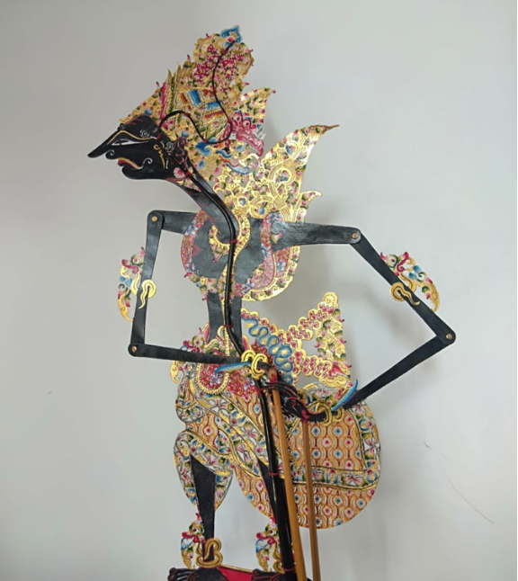

Profile
Wayang kulit itu kayak pertunjukan teater tradisional Indonesia, tapi bedanya, yang dimainkan itu boneka-boneka dari kulit (biasanya kulit sapi atau kerbau) yang dipertunjukkan di belakang layar. Jadi, bayangannya yang kelihatan di depan penonton, bukan bonekanya langsung.
Di sini ada "dalang" yang bukan cuma nggerakin wayang, tapi juga suara-suarain karakter-karakter yang ada di cerita, lengkap dengan emosi dan gaya ngomongnya. Ceritanya sih sering ambil dari Ramayana atau Mahabharata, tapi bisa juga cerita rakyat atau yang penuh pesan moral.
Yang bikin asyik, pertunjukan wayang kulit biasanya diiringi musik gamelan yang nambahin vibe-nya jadi makin keren dan magis gitu. Fun factnya wayang kulit ini dari Jawa, Bali, dan Lombok lohhhhh.